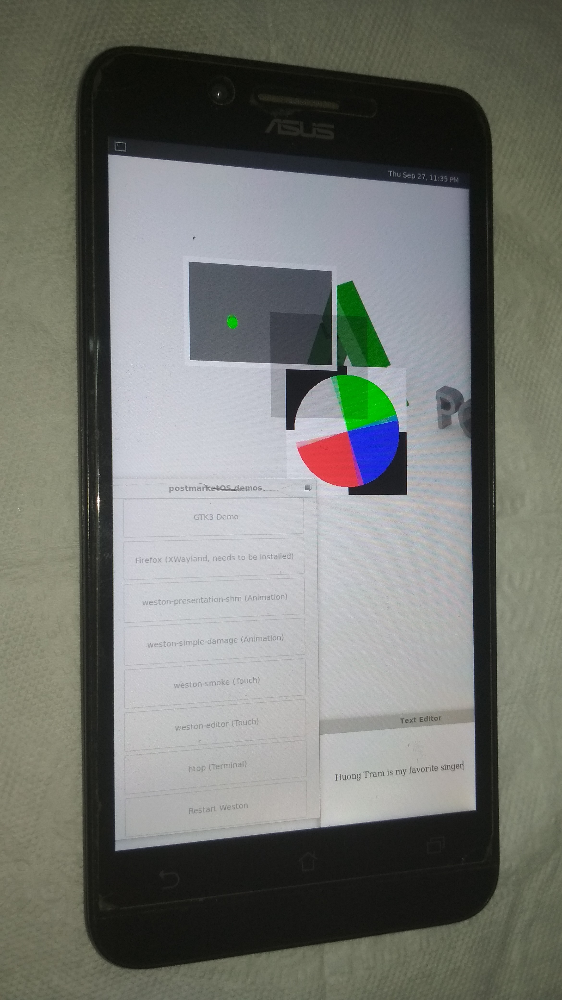

ASUS Zenfone Go (asus-z00vd)
Jump to navigation
Jump to search
| There are two variants of Zenfone Go, a Mediatek (Z00VD) and Snapdragon (ZB551KL, ZB452KL). This wiki page is for the MTK variant. |
|
 Wayland running on Zenfone Go (Z00VD) | |
| Manufacturer | ASUS |
|---|---|
| Name | Zenfone Go (MTK) |
| Codename | asus-z00vd |
| Released | 2015 |
| Category | testing |
| Original software | Android 5.1 |
| Hardware | |
| Chipset | MediaTek MT6580 |
| CPU | Quad-core 1.3 GHz Cortex-A7 |
| GPU | Mali-400MP2 |
| Display | 720x1280 IPS |
| Storage | 8/16 GB |
| Memory | 2 GB |
| Architecture | armv7 |
{kind=link}
| USB Networking |
Works
|
|---|---|
| Flashing |
Works
|
| Touchscreen |
Works
|
| Display |
Works
|
| WiFi | |
| FDE | |
| Mainline | |
| Battery | |
| 3D Acceleration | |
| Audio | |
| Bluetooth | |
| Camera | |
| GPS | |
| Mobile data | |
| SMS | |
| Calls | |
| USB OTG |
Unavailable
|
| NFC | |
| Accelerometer | |
|---|---|
| Magnetometer | |
| Ambient Light | |
| Proximity | |
| Hall Effect | |
| Ir TX | |
|---|---|
| TrustZone | |
Contributors
Maintainer(s)
Device owners
Unlocking bootloader
Since ASUS removed OEM unlocking option in v27 update, you'll have to downgrade to v25 in order to unlock your bootloader.
DOWNGRADING WILL ERASE YOUR DATA FROM INTERNAL STORAGE, INCLUDING APPS. PLEASE BACKUP ALL YOUR DATA BEFORE DOWNGRADE.
- Download v25 firmware (https://dlcdnets.asus.com/pub/ASUS/ZenFone/ZC500TG/UL-ZC500TG_ASUS_Z00VD-WW-12.1.0.25-user.zip)
- Put the zip file into a SD Card (or you can sideload the image)
- Turn on/Reboot the phone while holding volume up button, select "Recovery Mode"
- After that, you'll see a Android lying down with "No Command" underneath him, press volume up and down button in the same time.
SD Card:
- Choose Wipe data/factory Reset and Wipe Cache partition
- Then choose apply update from sdcard and find your v25 firmware in your SD card.
- Make sure keep your phone in the charger!
Sideload
- Choose Wipe data/factory Reset and Wipe Cache partition
- Then choose apply update from adb and plug your phone to your computer.
- Type adb devices in the console, you should see your device in there, if it isn't detected, make sure you have installed android-udev!
- Now when you're ready, run "adb sideload v25firmware.zip" (replace v25firmware.zip with the file name of the firmware you downloaded from ASUS)
After done, you should be able to enable OEM Unlocking from developer settings and unlock the bootloader to flash TWRP.
What works
- Install to SD Card
- Display
- Touch Screen
- Wayland
- XWayland
- USB Internet
What doesn't work
- FDE (reboot loop)
- Battery (device reboots when plugged the charger while device is off)
What is untested
- Wifi (need proprietary 6620_launcher and firmware blobs)
Anything that aren't filled in aren't tested.
How to enter flash mode
- Fastboot: Hold down the volume up button and turn on your phone, select Fastboot in the menu and press volume down to confirm.
- Recovery: Same method as entering fastboot, just select Recovery instead of Fastboot.
Installation
pmbootstrap install
- Fastboot: Works, you'll need to flash the kernel due to booting is not supported
- Recovery: Install through recovery is untested.
{kind=link}